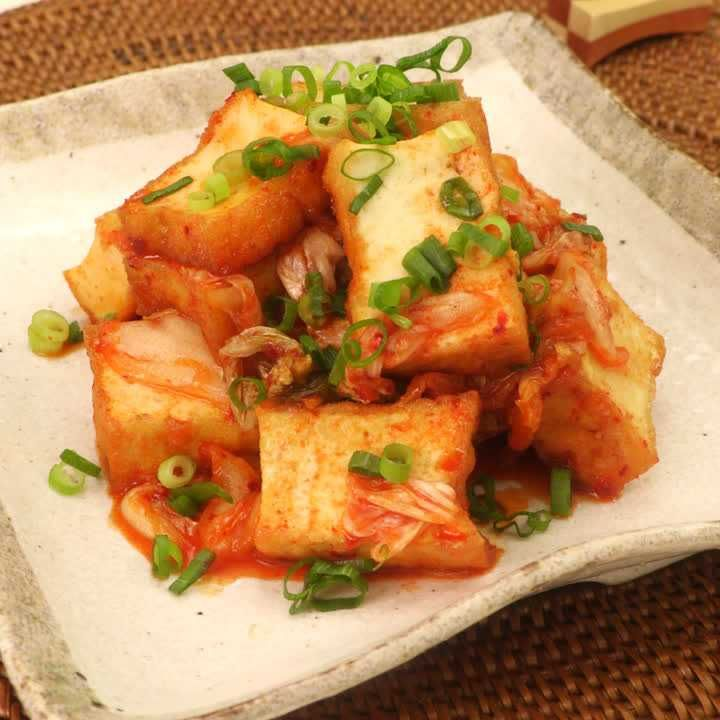

Atsuage Kimchi Stir-fry

Description
Atsuage is a pre-fried tofu sold in Japan, shaped like blocks. Stir-frying with tofu makes it flavorful! A healthy, cheap, and completely vegan dish!
Taken from Delish Kitchen
Ingredients (For 2 people)
Main ingredients
- Atsuage 1 block (200 g)
- Kimchi 200g
- Salad oil 2 tsp
- Sesame oil 1 tsp
- Spring onion slices suitable amount
Sauce
- Water 2 tbsp
- Shoyu (soy sauce) 1.5 tbsp
- Sugar 1.5 tbsp
- Sake 1.5 tbsp
Return to top